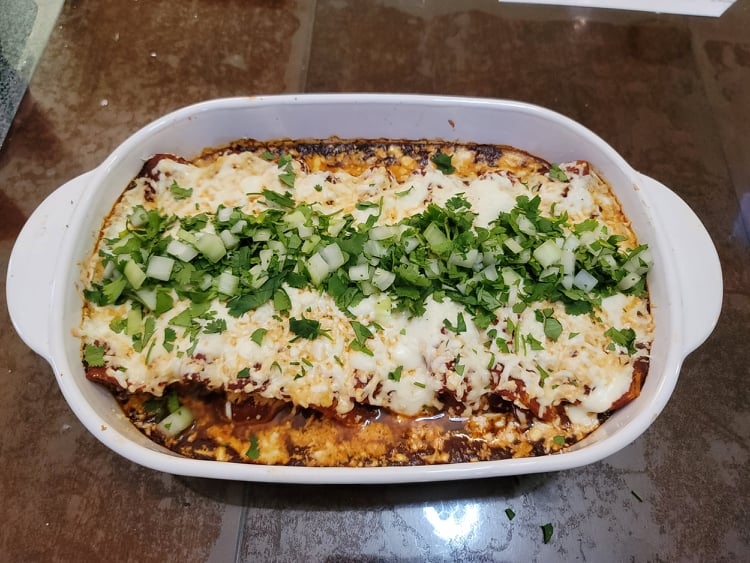

Chicken Enchiladas

Ingredients:
Enchilada Sauce:
- 4 Dried guajillo chiles, seeded and stem removed
- 2 Dried ancho chiles, seeded and stem removed
- 1 Dried arbol chile, seeded and stem removed
- 4 cups Boiling water
- 1 1/2 tsp Coarse salt
- 1 clove Garlic
- 1/8 tablet Mexican chocolate, 12 grams
Enchiladas:
- 1 1/2 cup Cooked shredded chicken
- 8 Corn tortillas
- 2 1/2 cups Oaxaca and/or Asadero cheese, grated
- Salt, to taste
- Black pepper, to taste
Instructions:
- Preheat an oven to 350 degrees Fahrenheit.
- In a bowl, combine the chicken, 1/4 cup of the enchilada sauce, and salt and pepper to taste.
- To make the tortillas more pliable, wrap the tortillas in a damp paper towel. Heat for 1 minute in the microwave, flipping halfway.
- Fill each tortilla evenly with the chicken and 1 cup of the cheese. Roll the tortilla and place into the baking dish seam side down.
- Pour the rest of the enchilada sauce evenly over the tortillas. Then sprinkle over the rest of the cheese. Bake for 20 minutes.
- Optionally top with chopped cilantro and diced onions. Serve immediately.